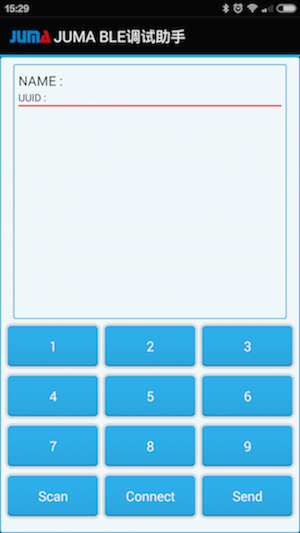

Cannon蓝牙遥控点灯
一、概述
本例展示手机APP如何通过蓝牙遥控点亮Cannon开发板上的LED。通过本例您可以学习SDK中BLE APIs和调度APIs的用法。
二、获取嵌入式SDK及例程
下载最新的嵌入式SDK(发布版)：
https://github.com/JUMA-IO/STM32_Platform/releases
如JUMA STM32 Platform SDK v1.0.0：
注意，如果您想获知最新的代码改动情况，请使用github的“watch”功能。三、编译和烧录嵌入式软件
Step1. 打开样本工程：
x:/Cannon/product/application/remote_control/mdk-arm/CAF.uvprojStep2. 编译工程

Step3. 烧入软件

四、手机安装“BLE调试助手”APP
不像先前的SensorTag，我们没有为遥控点灯专门制作一个APP，不过您可以通过“BLE调试助手”来实现遥控点灯。就像它的命名一样，“BLE调试助手”是一个调试APP，可以发送或接收手机和设备之间的原始蓝牙数据。本例中，我们使用“BLE调试助手”给Cannon发送一个数据，Cannon接收到该数据后，就点亮LED。
1. Android手机用户
如果您使用Anddroid手机，有三种方式安装“BLE调试助手”：
第一种方式：使用Android的APK文件，该文件位于SDK的tools目录下：
x:/Cannon/tools/JumaBleHelper.apk将该文件传送到Android手机，直接安装便可。
第二种方式：如果您熟悉Android开发环境，可以使用“BLE调试助手”的源码来安装。Android版本的“BLE调试助手”APP的源码位于：
https://github.com/JUMA-IO/BLE_Debugger_Android
第三种方式：您可以从百度APP市场下载安装：
http://shouji.baidu.com/software/item?docid=8645078
2. iPhone手机用户
如果您使用iPhone手机，有两种方式安装“BLE调试助手”：
第一种方式：您可以从AppStore搜索、下载和安装“JUMA BLE调试助手”。
https://itunes.apple.com/cn/app/juma-ble-diao-shi-zhu-shou/id1027737596
第二种方式：如果您熟悉iPhone开发环境，可以使用“BLE调试助手”的源码来安装。iOS版本的“BLE调试助手”APP的源码位于：
https://github.com/JUMA-IO/BLE_Debugger_iOS
五、和手机APP通信
Step1. 打开手机的蓝牙功能

Step2. 运行“BLE调试助手”APP
打开后的界面如下：

Step3. 扫描和连接设备
点击Scan进行设备扫描，之后会看到如下的扫描结果：
选择“BlueNRG_LED”或者“Cannon”起始的设备名，再点击Start/Connect按钮进行连接。
Step4. APP发送数据遥控点灯
之后APP可以发送数据给Cannon，Cannon接受到特定的数据后，会点亮LED。具体做法为：
- 长按按钮“1”，在编辑框中输入“01”(十六进制的数值)表示点灯。
- 长按按钮“2”，在编辑框中输入“00”(十六进制的数值)表示熄灭。
然后点击按钮1或者按钮2，APP就会给Cannon发0x01和0x02了。
注意，调试助手会封装数据，比如：
点亮LED时数据内容为：0x01，实际发送0x010101；
熄灭时数据位内容为：0x00，实际发送0x010100。
其中数据格式为：第1个字节为数据类型，第2个字节为数据长度，第三个字节为数据内容。 六、阅读代码
本例中的嵌入式代码位于：
x:/Cannon/product/application/remote_control/app.c代码量很少，已配有注释，非常方便阅读。
如果您对其中的BLE APIs和调度APIs有所疑问，请查阅相应的API说明：
http://www.juma.io/doc/zh/embedded_sdk.html